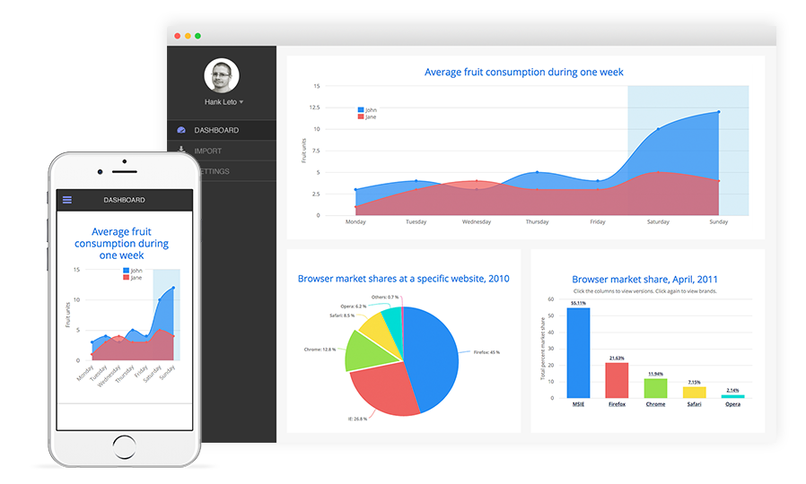

3 About Vaadin
Vaadin is Java Web UI Framework for Business Applications.
With Vaadin Framework, you’ll use a familiar component based approach to build awesome single page web apps faster than with any other UI framework. Forget complex web technologies and just use Java or any other JVM language. Only a browser is needed to access your application - no plugins required.

| The Vaadin 8 Grails profile allows you mix Vaadin endpoints and traditional Grails endpoints. |
On the one hand, we are going to have endpoints which will be handled by Grails Controllers. They will render HTML, JSON or XML using GSP or Grails Views.
On the other hand, we are going to have Vaadin endpoints. We will develop the UI using Java or Groovy, and we will connect to the Grails service layer directly.